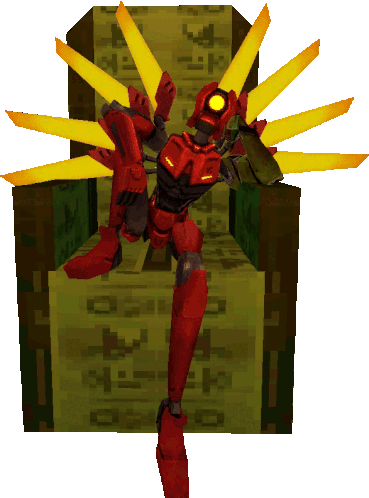

I have a few hobbies, if you can believe that! One of them is volunteering at VAC (Valley Animal Center), helping with the inside part for the adoptable cats. But the best part is working with the feral cats outside. I usually just help maintain the outside area along with socializing with the ferals. If you'd like to adopt an animal from VAC, click here!
My second hobby is playing video games (if you couldn't tell). I like mostly FPS games, third person shooters, and some adventure/indie games sprinkled in there. My favorite of which is ULTRAKILL, a game where you are a robot, V1, that was built for a great war against humans. All of the humans are gone, you rely on blood as your fuel, and you make your way to Hell to fulfill that need.
A runner-up favorite of mine is Metal Gear Rising: Revengeance. I'm not going to explain it here since it's very in-depth and kind of weird. So, just look it up yourself.
My third hobby is listening to music. This hobby is kind of in tangent to video games since most of the games I play have a good soundtrack, (in my opinion). My favorites at this moment are Heaven Pierce Her (ULTRAKILL dev), and the DMC3-5 soundtracks made by Capcom Sound Team.

Although most of my awards and achievements are already listed on my resume, I will still put them here for convenience. I have gotten Honor Roll or Principal's Honor Roll every semester since 7th grade (All B's or higher). I have also gotten a 3 on both AP tests I have taken. The classes taken were AP Computer Science Principles and AP Computer Science A. They both focused on JavaScript and Java, along with the overall purpose of it, along with how to write it effectively with shortcuts. Although I don't really have any achievements outside of school since most of my day revolves around school.